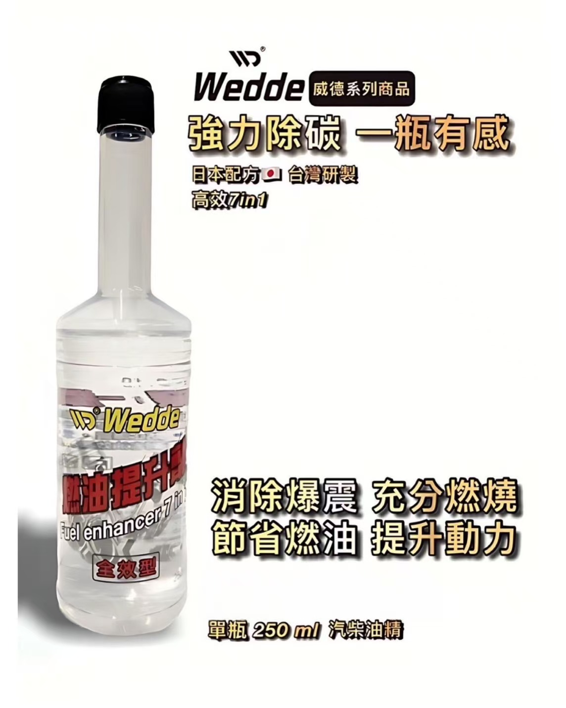
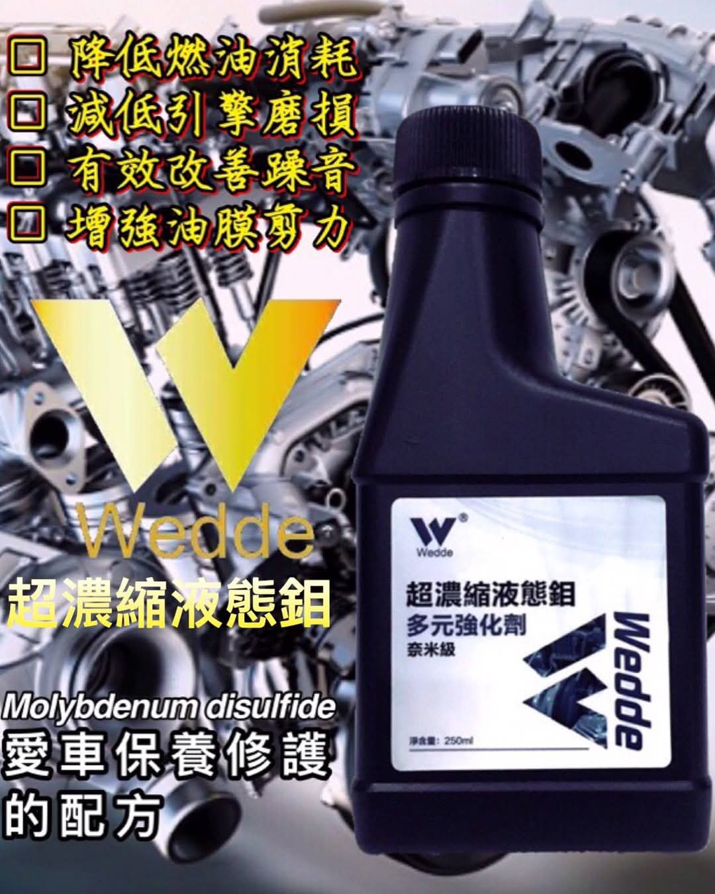
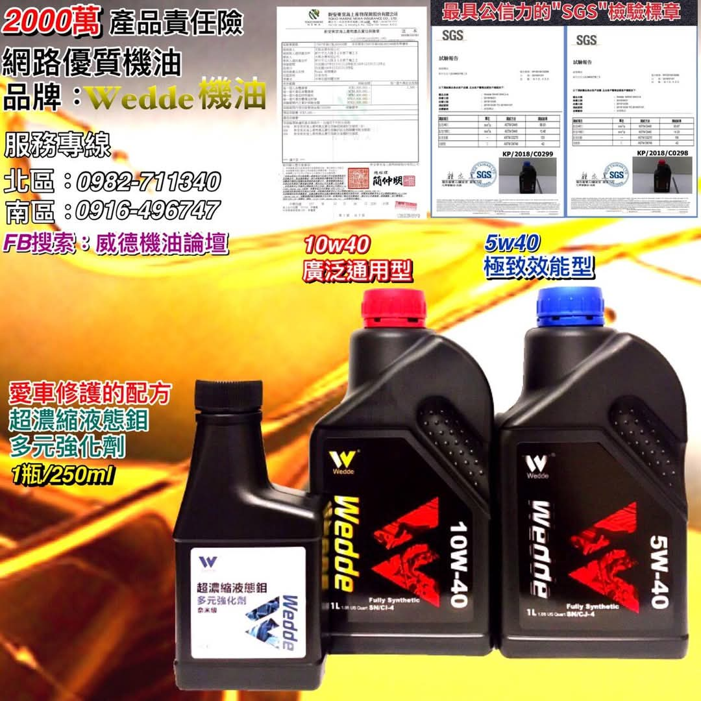

歡迎來到威德機油
威德機油專注於極致潤滑科技，無論賽道或日常駕駛，我們都提供最堅強的引擎保護。
產品亮點



使用方法圖解
簡單三步驟，輕鬆使用威德產品：
- 開啟油箱蓋 / 引擎蓋
- 倒入適量產品
- 啟動引擎 3–5 分鐘循環
顧客見證
「用了燃油提升劑後，怠速穩定許多，加速也更有力！」 – 阿昇
「液態鉬真的有差，機油溫度下降，而且沒那麼容易高熱衰退。」 – 車主小王
威德機油專注於極致潤滑科技，無論賽道或日常駕駛，我們都提供最堅強的引擎保護。
簡單三步驟，輕鬆使用威德產品：
「用了燃油提升劑後，怠速穩定許多，加速也更有力！」 – 阿昇
「液態鉬真的有差，機油溫度下降，而且沒那麼容易高熱衰退。」 – 車主小王